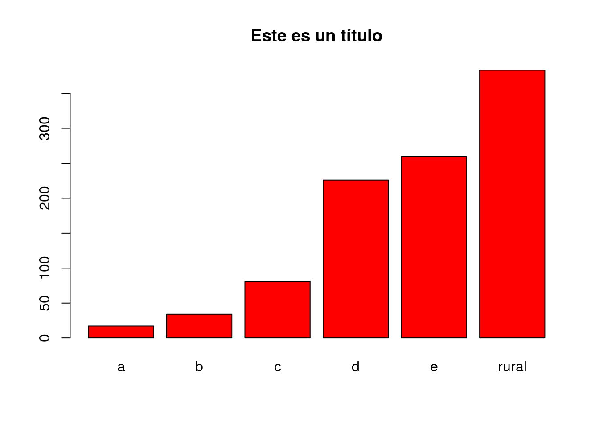
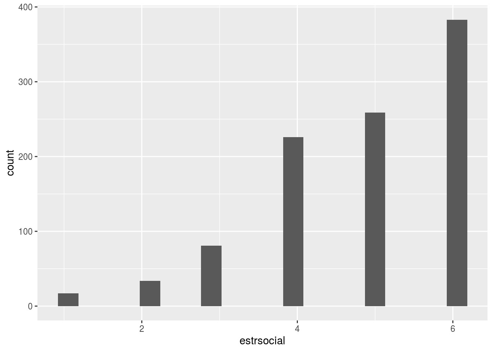
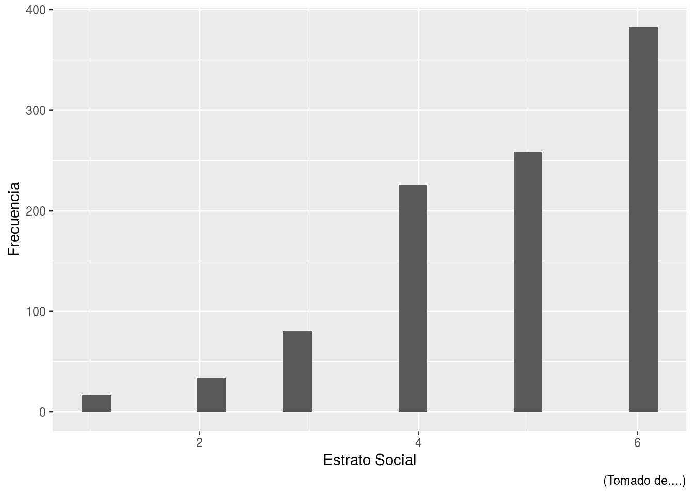
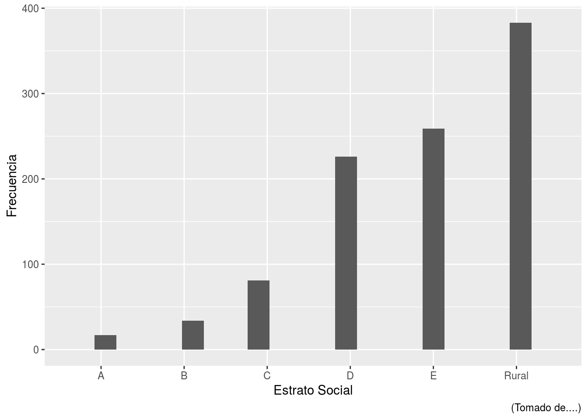
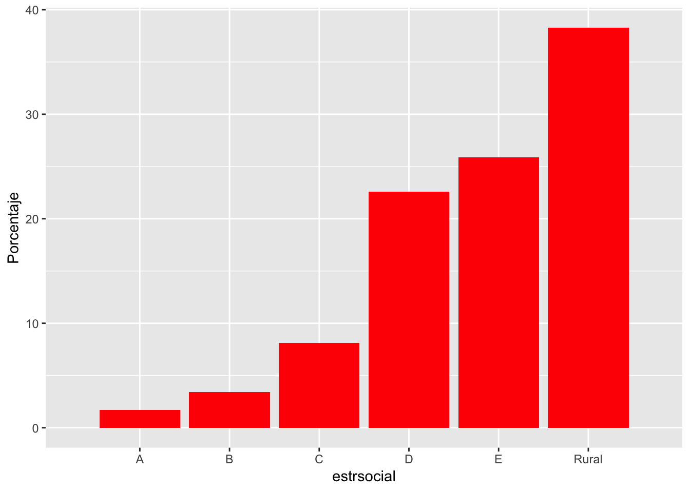
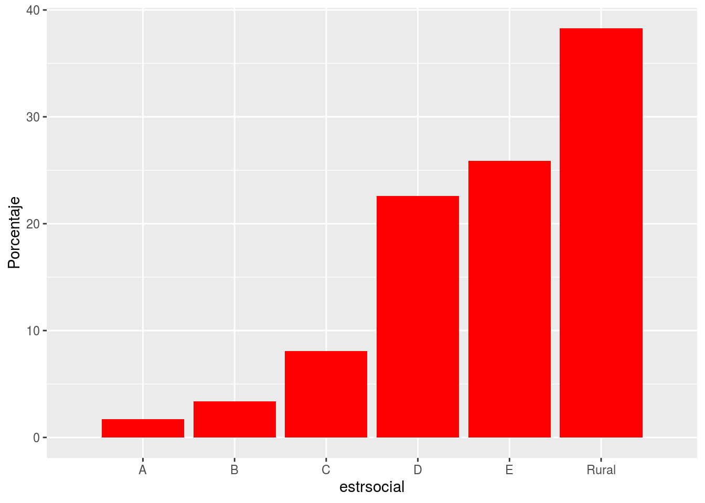
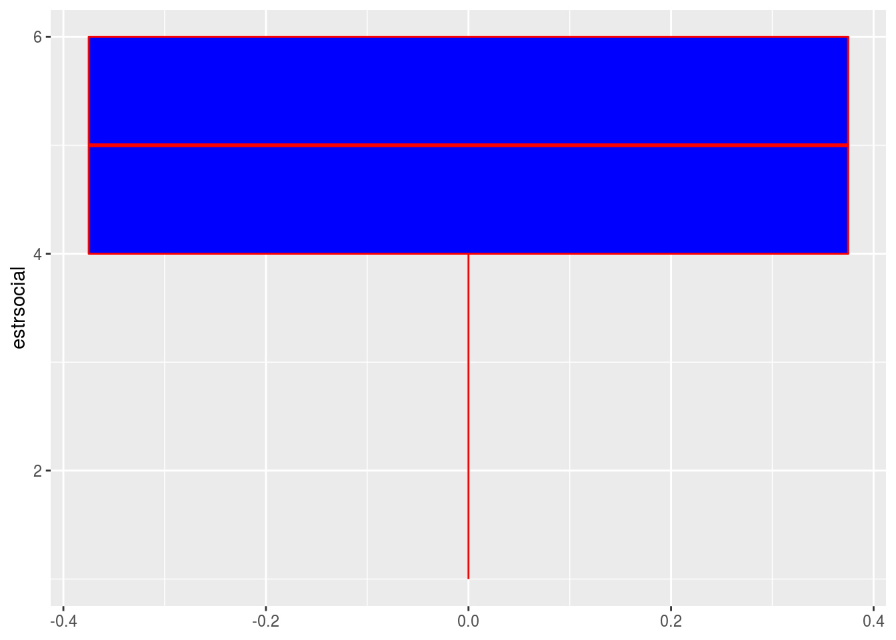
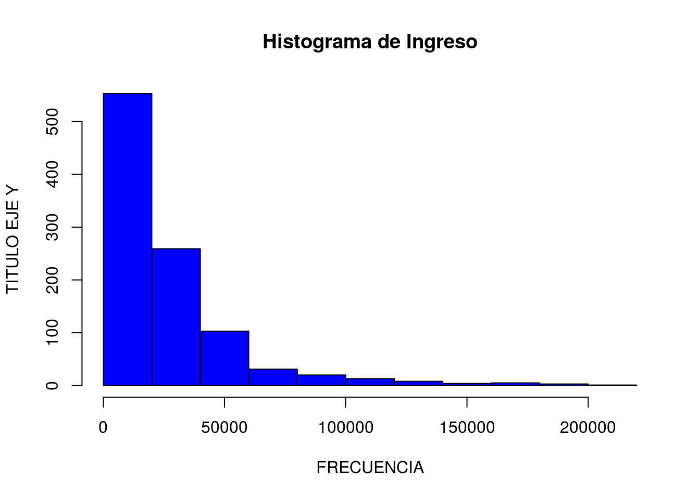
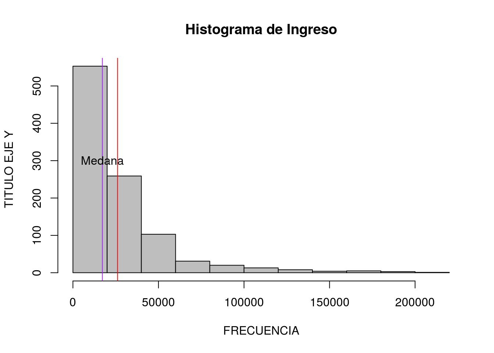

Descriptivos
ULTIMA ACTUALIZACIÓN:
La última actualización de este artículo se realizó el 3 de noviembre del 2019.
1 Descriptivos básicos
Reutilizamos la base de datos s2018, con la que hemos venido trabajando en la sección anterior
Existen funciones que nos pueden dar un vistazo a toda la base de datos. La más útil es summary(). Esta función nos dará el resumen más propicio según el tipo de objeto que usemos como argumento. Por ejemplo, cuando pasamos un data.frame nos da un resumen de cada una de las variables contenidas, pero cuando pasamos una sola variable el resumen es más conciso.
## aÑo mes nconglome
## Length:1000 Length:1000 Length:1000
## Class :character Class :character Class :character
## Mode :character Mode :character Mode :character
## conglome vivienda
## Length:1000 Length:1000
## Class :character Class :character
## Mode :character Mode :character## Min. 1st Qu. Median Mean 3rd Qu. Max.
## 0 7238 17207 26065 33768 200178Dentro del paquete Hmisc tenemos la función describe() que también nos brinda un resumen bastante útil de nuestra variable.
## s2018$ingreso_bruto : ingreso monetario (bruto) Format:%10.0g
## n missing distinct Info Mean Gmd .05 .10
## 1000 0 992 1 26065 26954 1894 3266
## .25 .50 .75 .90 .95
## 7238 17207 33768 56070 83433
##
## lowest : 0 60 194 203 241, highest: 179165 186308 193650 198447 200178Podemos pedir medidas de centralidad especifícas. Es bueno agregar na.rm = TRUE ya que si tenemos valores perdidos generaría error en el cálculo.
## [1] 26064.51## [1] 17207## [1] 29193.19## [1] 852242579Podemos pedir medidas de posición:
## 90%
## 56070.2Podemos pedir varios a la vez, combinando funciones. Por ejemplo la función seq(inicio, final, salto)
## 10% 20% 30% 40% 50% 60% 70%
## 3265.643 5728.800 9028.194 13116.955 17207.000 22319.400 29505.700
## 80% 90%
## 38018.600 56070.2001.1 Tablas:
Frequencias.
##
## 1 2 3 4 5 6
## 17 34 81 226 259 383Proportion table.
##
## 1 2 3 4 5 6
## 0.017 0.034 0.081 0.226 0.259 0.383Tablas con Dplyr:
s2018 %>%
group_by(estrsocial) %>%
summarise(Frequency=n()) %>%
mutate(Porcentaje=Frequency/sum(Frequency)*100) %>%
mutate(Estratos=names(attributes(s2018$estrsocial)$labels)) %>%
select(Estratos,Frequency,Porcentaje)## # A tibble: 6 x 3
## Estratos Frequency Porcentaje
## <chr> <int> <dbl>
## 1 a 17 1.7
## 2 b 34 3.4
## 3 c 81 8.1
## 4 d 226 22.6
## 5 e 259 25.9
## 6 rural 383 38.32 Gráficos Descriptivos:
Existen funciones básicas para gráficos en R, pero la versatilidad de R para gráficos va más allá de estas funciones básicas. Paquetes como ggplot2 han llevado a otro nivel el análisis gráfico de R.
Aquí trataremos de mostrar ambos.
2.1 Graficos de Barra simples en R base

Podemos modificar algunos argumentos:
- col para especificar el color de las barras
- names.arg para las etiquetas de las barras
- main para especificar el texto del título
barplot(table(s2018$estrsocial), col="red",
names.arg = names(attributes(s2018$estrsocial)$labels),
main="Este es un título")
2.2 Graficos de Barra simples en ggplot2 y dplyr
- ggplot: es el paso inicial para crear un “ambiente” ggplot.
- + vas agregando capas (detalles) al objecto
geom_bares que crearemos un gráficos de barras
library(ggplot2) # Recuerda que tienes haberlo instalado antes.
library(dplyr)
s2018%>%ggplot(aes(x=estrsocial))+
geom_bar(stat="bin", bins=20)
Al mismo gráfico le cambiamos el nombre de los ejes con labs, incluso le podemos agregar una “nota”
s2018%>%ggplot(aes(x=estrsocial))+
geom_bar(stat="bin", bins=20)+
labs(y="Frecuencia", x="Estrato Social",
caption="(Tomado de....)")
Ahora le cambiamos la etiqueta al eje x!.
s2018%>%ggplot(aes(x=estrsocial))+
geom_bar(stat="bin", bins=20)+
labs(y="Frecuencia", x="Estrato Social",
caption="(Tomado de....)")+
scale_x_discrete(limit= c("A","B","C","D",
"E","Rural"))
Gráficos con porcentajes
- En este caso manipulamos la data con dplyr para obtener los porcentajes por cada grupo.
s2018%>%group_by(estrsocial)%>%
summarise(Frequencia=n())%>% ## Tabla de frecuencias
mutate(Porcentaje=Frequencia/sum(Frequencia)*100)%>% ##Agregando porcentajes
ggplot(aes(x=estrsocial, y=Porcentaje))+
geom_bar(stat="identity", fill="red")+
scale_x_discrete(limit= c("A","B","C","D",
"E","Rural"))
2.3 Box plot o diagramas de cajas

2.4 Box plot o diagramas de cajas con dyplr y ggplot2

2.5 Histogramas
- Hagamos una histograma de la variable ingreso
hist(s2018$ingreso_bruto, main="Histograma de Ingreso",
ylab="TITULO EJE Y", xlab="FRECUENCIA",
col="blue")
Podemos agregar una línea que represente la media.
hist(s2018$ingreso_bruto, main="Histograma de Ingreso",
ylab="TITULO EJE Y", xlab="FRECUENCIA",
col="blue")
abline(v=mean(s2018$ingreso_bruto), col="red")Podemos agregar una línea que represente la mediana también y otros detalles.
hist(s2018$ingreso_bruto, main="Histograma de Ingreso",
ylab="TITULO EJE Y", xlab="FRECUENCIA",
col="grey") ## Histograma básico
abline(v=mean(s2018$ingreso_bruto), col="red") ## Agregando media
abline(v=median(s2018$ingreso_bruto), col="purple") ## Agregando Mediana
text(median(s2018$ingreso_bruto),300, "Medana",pch = 3)